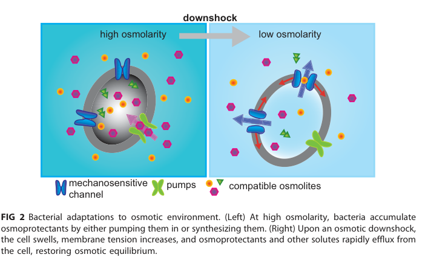

mscL encodes the large-conductance mechanosensitive channel that opens in response to membrane stretch during osmotic pressure changes.
| GO Term | Evidence | Action | Reason |
|---|---|---|---|
|
GO:0005886
plasma membrane
|
IEA
GO_REF:0000120 |
ACCEPT |
Summary: The bacterial plasma-membrane annotation is correct for MscL.
Reason: UniProt places MscL in the cell inner membrane, corresponding to plasma membrane in bacterial GO annotation, and this location is intrinsic to channel activity.
Supporting Evidence:
file:PSEPK/mscL/mscL-uniprot.txt
SUBCELLULAR LOCATION: Cell inner membrane
file:PSEPK/mscL/mscL-goa.tsv
GO:0005886 plasma membrane
file:PSEPK/mscL/mscL-deep-research-falcon.md
MscL is localized to the **cytoplasmic (inner) membrane**. In *P. putida* KT2440 specifically, the channel is described as an **“inner-membrane residing rescue valve”**.
|
|
GO:0006811
monoatomic ion transport
|
IEA
GO_REF:0000118 |
MARK AS OVER ANNOTATED |
Summary: Monoatomic ion transport is true but less informative than the transmembrane transport annotation.
Reason: MscL is a membrane channel; GO:0034220 monoatomic ion transmembrane transport and GO:0008381 mechanosensitive monoatomic ion channel activity better capture the function.
Supporting Evidence:
file:PSEPK/mscL/mscL-uniprot.txt
opens in response to stretch forces
file:PSEPK/mscL/mscL-goa.tsv
GO:0006811 monoatomic ion transport
file:PSEPK/mscL/mscL-deep-research-falcon.md
MscL is described as **size-selective rather than solute-specific**, consistent with an emergency pore rather than a dedicated metabolite transporter.
|
|
GO:0008381
mechanosensitive monoatomic ion channel activity
|
IEA
GO_REF:0000120 |
ACCEPT |
Summary: Mechanosensitive monoatomic ion channel activity is the available specific GO molecular-function annotation for MscL, but the monoatomic-ion wording underspecifies the broad, low-selectivity emergency-valve behavior known for MscL-family channels.
Reason: UniProt describes a large-conductance channel that opens in response to membrane stretch and may regulate osmotic pressure changes. GO:0008381 is the existing HAMAP-supported term and should be accepted, while noting that a non-selective mechanosensitive channel term would better capture the broader permeability of MscL-family channels.
Supporting Evidence:
file:PSEPK/mscL/mscL-uniprot.txt
opens in response to stretch forces
file:PSEPK/mscL/mscL-goa.tsv
GO:0008381 mechanosensitive monoatomic ion channel activity
file:PSEPK/mscL/mscL-deep-research-falcon.md
MscL is a mechanosensitive pore that provides **non-specific, size-limited efflux** of cytoplasmic contents during acute downshock. It is **not a selective transporter for a particular substrate**, but rather a broad “safety valve” that releases compatible solutes and other cytoplasmic molecules when the channel opens.
file:PSEPK/mscL/mscL-deep-research-falcon.md
MscL is **gated directly by the membrane** (force-from-lipids), and channel activity can be reconstituted with purified protein in lipid bilayers, supporting that the membrane environment is sufficient for gating.
|
|
GO:0016020
membrane
|
IEA
GO_REF:0000120 |
MARK AS OVER ANNOTATED |
Summary: The generic membrane annotation is true but redundant with plasma membrane.
Reason: GO:0005886 is the more informative cellular component for this bacterial inner-membrane channel.
Supporting Evidence:
file:PSEPK/mscL/mscL-uniprot.txt
Cell inner membrane
file:PSEPK/mscL/mscL-goa.tsv
GO:0016020 membrane
|
|
GO:0034220
monoatomic ion transmembrane transport
|
IEA
GO_REF:0000120 |
ACCEPT |
Summary: Monoatomic ion transmembrane transport is an appropriate process annotation for MscL.
Reason: MscL is a mechanosensitive membrane channel and the transmembrane process term is more specific than generic monoatomic ion transport.
Supporting Evidence:
file:PSEPK/mscL/mscL-uniprot.txt
pressure changes within the cell
file:PSEPK/mscL/mscL-goa.tsv
GO:0034220 monoatomic ion transmembrane transport
file:PSEPK/mscL/mscL-deep-research-falcon.md
MscL opens to release solutes, thereby rapidly lowering turgor and preventing catastrophic membrane rupture.
|
Q: What membrane-tension threshold gates KT2440 MscL compared with canonical E. coli MscL?
Q: Would GO benefit from a non-selective mechanosensitive channel activity term for MscL-family emergency-valve channels whose permeability extends beyond monoatomic ions?
Experiment: Patch-clamp spheroplasts or reconstituted MscL proteoliposomes under defined membrane tension and compare conductance/gating thresholds.
Type: mechanosensitive channel electrophysiology
The research report should be a detailed narrative explaining the function, biological processes, and localization of the gene product. Citations should be given for all claims.
You should prioritize authoritative reviews and primary scientific literature when conducting research. You can supplement
this with annotations you find in gene/protein databases, but these can be outdated or inaccurate.
We are specifically interested in the primary function of the gene - for enzymes, what reaction is catalyzed, and what is the substrate specificity? For transporters, what is the substrate? For structural proteins or adapters, what is the broader structural role? For signaling molecules, what is the role in the pathway.
We are interested in where in or outside the cell the gene product carries out its function.
We are also interested in the signaling or biochemical pathways in which the gene functions. We are less interested in broad pleiotropic effects, except where these elucidate the precise role.
Include evidence where possible. We are interested in both experimental evidence as well as inference from structure, evolution, or bioinformatic analysis. Precise studies should be prioritized over high-throughput, where available.
The target protein specified by UniProt Q88E23 is annotated as a large-conductance mechanosensitive channel (MscL family) encoded by mscL with locus PP_4645 in Pseudomonas putida KT2440. This identity is consistent with experimental P. putida KT2440 literature that describes MscL as an “inner-membrane residing rescue valve” important for coping with low-osmolarity (hypotonic) challenges and specifically manipulated via mscL inactivation in KT2440 strains. (pobletecastro2020engineeringtheosmotic pages 1-2)
Bacterial mechanosensitive channels are membrane proteins that sense increased lateral membrane tension (e.g., during sudden hypoosmotic shock) and open to relieve turgor pressure. MscL is classically described as a last-ditch “emergency release valve” that opens when osmotic conditions threaten membrane rupture, permitting rapid efflux of cytoplasmic solutes and thereby preventing cell lysis. (blount2020lifewithbacterial pages 10-12, blount2020lifewithbacterial pages 6-8, blount2020lifewithbacterial pages 4-6)
Mechanistically, MscL is gated directly by the membrane (force-from-lipids), and channel activity can be reconstituted with purified protein in lipid bilayers, supporting that the membrane environment is sufficient for gating. (blount2020lifewithbacterial pages 4-6)
Primary function (functional annotation): MscL is a mechanosensitive pore that provides non-specific, size-limited efflux of cytoplasmic contents during acute downshock. It is not a selective transporter for a particular substrate, but rather a broad “safety valve” that releases compatible solutes and other cytoplasmic molecules when the channel opens. MscL is described as size-selective rather than solute-specific, consistent with an emergency pore rather than a dedicated metabolite transporter. (blount2020lifewithbacterial pages 4-6)
Substrate/cargo: Because MscL forms one of the largest gated pores known, it can allow passage not only of small ions but also larger osmolytes and even small proteins in some settings; this broad permeability is part of its emergency-relief role. (blount2020lifewithbacterial pages 8-10)
MscL is localized to the cytoplasmic (inner) membrane. In P. putida KT2440 specifically, the channel is described as an “inner-membrane residing rescue valve”. (pobletecastro2020engineeringtheosmotic pages 1-2, blount2020lifewithbacterial pages 2-4)
MscL channels are conserved across bacteria. General architectural features include a predominantly helical subunit with two transmembrane helices (TM1/TM2) plus cytoplasmic N- and C-terminal regions, with the pore lined primarily by TM1. The biologically relevant oligomeric form is described as pentameric in vivo. (blount2020lifewithbacterial pages 6-8, lane2023approachesforthe pages 1-2)
Most quantitative single-channel parameters available in the retrieved corpus come from cross-species MscL literature (often E. coli and other homologs) and are used here as strong homology-based functional inference for P. putida KT2440 MscL.
Note on gating tension/pressure: Within the retrieved KT2440-specific literature, explicit numeric gating tension thresholds for P. putida MscL were not found. Instead, general studies emphasize tension dependence and provide structural/energetic descriptions. (blount2020lifewithbacterial pages 4-6, zhang2024mechanosensitivechannelmscl pages 11-13)
The canonical physiological role of MscL is survival of acute hypoosmotic shock: when external osmolarity rapidly decreases, water influx increases cytoplasmic turgor pressure and membrane tension. MscL opens to release solutes, thereby rapidly lowering turgor and preventing catastrophic membrane rupture. This role is presented as a core function of bacterial MscL channels and is the basis for describing MscL as an emergency valve. (blount2020lifewithbacterial pages 10-12, blount2020lifewithbacterial pages 6-8)
In P. putida KT2440, applied work directly leverages this physiological role: engineering strategies that inactivate mscL sensitize cells to osmotic transitions, supporting that MscL normally contributes to robustness under low-osmolarity challenges. (pobletecastro2020engineeringtheosmotic pages 1-2)
General bacterial physiology indicates partial redundancy among mechanosensitive channels. In classic genetics, an mscL single mutant can show minimal phenotype under some conditions, whereas combined loss of multiple mechanosensitive channels yields strong downshock sensitivity, consistent with an overlapping “safety valve” network. (blount2020lifewithbacterial pages 4-6)
A 2023 review highlights that the exact molecular mechanism by which MscL senses tension remains incompletely resolved, and therefore multiple experimental approaches are used to modulate channel gating.
Key 2023 synthesis points include:
* Mutational modulation: substitutions at key residues (e.g., constriction-region variants; classic “gain-of-function” gating mutants) shift activation thresholds and aid mechanistic mapping. (lane2023approachesforthe pages 1-2)
* Chemical/engineering modulation: early work used cysteine-reactive reagents and engineered modifications to trigger gating; later work uses membrane property manipulation (lipid composition/physical parameters). (lane2023approachesforthe pages 1-2)
* Direct-binding agonists: more recent studies (summarized in 2023) describe structurally distinct agonists that bind directly to MscL near a transmembrane pocket implicated in mechanical gating, providing a path toward MscL-targeting antimicrobials/adjuvants. (lane2023approachesforthe pages 1-2)
* Additional modulation themes summarized include cyclodextrins (as “universal activators” via membrane tension changes), gadolinium ions (effects on lipid packing/lateral pressure), host-defense peptides (altering lipid domains and activation energies), and photoactivation approaches; these are positioned as both mechanistic probes and enabling technologies for controlled permeabilization. (lane2023approachesforthe pages 6-7)
These 2023 developments are directly relevant to functional annotation because they clarify that MscL’s “substrate” is not a specific molecule but rather that gating and permeability can be tuned by both protein and membrane determinants. (lane2023approachesforthe pages 1-2, lane2023approachesforthe pages 6-7)
A 2024 primary mechanistic study (Protein Science) provides quantitative insight into MscL gating transitions, emphasizing that gating may proceed through closed → expanded (without full opening) → low-conducting substates → fully open, and that the effective constriction point shifts during this pathway toward the cytoplasmic side from G26 → G22 → L19. (zhang2024mechanosensitivechannelmscl pages 1-2)
Quantitative thermodynamic/elastic parameters were estimated:
* Closed → fully open: ΔE ≈ 52 kT, ΔA ≈ 20 nm². (zhang2024mechanosensitivechannelmscl pages 11-13)
* Closed → low-conducting substate (S0.13): ΔE ≈ 45.6 kT, ΔA ≈ 14.8 nm². (zhang2024mechanosensitivechannelmscl pages 11-13)
The same 2024 work identifies constriction residues (e.g., G26, V23, G22, L19) and emphasizes that hydrophobic and lipidic interactions at constriction “hot spots” tune the gating energetics, consistent with lipid–protein coupling as a central principle. (zhang2024mechanosensitivechannelmscl pages 11-13, zhang2024mechanosensitivechannelmscl pages 13-14)
A concrete KT2440 implementation uses mscL inactivation as part of an engineered osmotic-weakening strategy to accelerate cell disruption and recovery of intracellular bioproducts (polyhydroxyalkanoates, PHA).
In P. putida KT2440, Poblete-Castro et al. (2020) engineered the osmotic state by inactivating MscL and overproducing outer membrane porins (OprF/OprE). Under PHA-producing conditions, single-porin strains showed no impairment in growth/biomass/PHA yield after 48 h, while tandem porin expression in the mscL mutant (KTΔmscL-oprFE) produced a modest biomass reduction of ~10% alongside higher PHA accumulation (%wt). Following an osmotic upshift (1 h) and rapid transfer to hypotonic conditions, KTΔmscL-oprFE exhibited membrane damage and rapid loss of viability; >95% of cells were disrupted within 3 h (CFU, FACS, TEM). PHA recovery reached 94.2% without significant change in monomer composition. (pobletecastro2020engineeringtheosmotic pages 1-2)
This constitutes a real-world, process-oriented use of mscL functional knowledge: removing an emergency valve increases susceptibility to controlled osmotic lysis, improving downstream recovery economics. (pobletecastro2020engineeringtheosmotic pages 1-2)
Authoritative reviews also discuss MscL as a potential pharmacological target and as an engineered “nanovalve” concept, because channel modality can be altered and the pore is exceptionally large. This expert framing supports ongoing interest in MscL modulation both for antimicrobial discovery and for engineered delivery/permeabilization technologies. (blount2020lifewithbacterial pages 2-4)
Across expert reviews, MscL is positioned as a paradigmatic mechanosensitive channel because it (i) senses membrane tension directly, (ii) undergoes large conformational change, and (iii) provides a clear physiological function (osmotic emergency release). The expert consensus is that MscL’s key biological “pathway” context is osmoadaptation to acute downshock, operating at the membrane biophysics interface rather than in a canonical metabolite pathway. (blount2020lifewithbacterial pages 10-12, blount2020lifewithbacterial pages 6-8, blount2020lifewithbacterial pages 4-6)
Recent mechanistic studies continue refining which residues and lipid interactions govern intermediate states and “hydrophobic constriction” behavior, reinforcing that functional annotation should include: (a) emergency-release physiology, (b) force-from-lipids gating, and (c) broad size-limited permeability. (zhang2024mechanosensitivechannelmscl pages 11-13, zhang2024mechanosensitivechannelmscl pages 13-14)
Molecular function: Mechanosensitive channel activity; tension-gated pore permitting rapid, non-specific efflux of cytoplasmic solutes during hypoosmotic stress. (blount2020lifewithbacterial pages 10-12, blount2020lifewithbacterial pages 4-6)
Biological process: Osmotic downshock response / protection from lysis; contributes to surviving low-osmolarity challenges. (pobletecastro2020engineeringtheosmotic pages 1-2, blount2020lifewithbacterial pages 6-8)
Cellular component: Inner (cytoplasmic) membrane. (pobletecastro2020engineeringtheosmotic pages 1-2, blount2020lifewithbacterial pages 2-4)
Quantitative characteristics (best-supported): Large conductance (~3.6 nS), very large pore (~25–30 Å diameter), broad size cutoff (~30 Å). (blount2020lifewithbacterial pages 8-10, blount2020lifewithbacterial pages 6-8)
Key figures from an authoritative review illustrate: (i) MscL as an emergency release valve during osmotic downshock, (ii) pentameric architecture, and (iii) gating-related conformational changes linked to a large open pore. (blount2020lifewithbacterial media 93fdecdb, blount2020lifewithbacterial media 9449b2c3, blount2020lifewithbacterial media 3a0679a3)
| Aspect | Key points (include numbers) | Evidence type (review/primary/engineering) | Source (author year journal) | DOI/URL | Citation ID |
|---|---|---|---|---|---|
| Verified identity | Target is mscL / PP_4645 from Pseudomonas putida KT2440; annotated as a large-conductance mechanosensitive channel in the MscL family. Experimental P. putida literature explicitly describes MscL as the inner-membrane rescue valve used to withstand low-osmolarity stress, matching the UniProt description for Q88E23. | Engineering + review-supported functional annotation | Poblete-Castro et al. 2020 Frontiers in Bioengineering and Biotechnology; Blount & Iscla 2020 MMBR | https://doi.org/10.3389/fbioe.2020.00161 ; https://doi.org/10.1128/mmbr.00055-19 | (pobletecastro2020engineeringtheosmotic pages 1-2, blount2020lifewithbacterial pages 10-12) |
| Cellular localization | MscL is a cytoplasmic/inner membrane mechanosensitive channel; P. putida study calls it an inner-membrane residing rescue valve. | Review + engineering | Blount & Iscla 2020 MMBR; Poblete-Castro et al. 2020 Frontiers in Bioengineering and Biotechnology | https://doi.org/10.1128/mmbr.00055-19 ; https://doi.org/10.3389/fbioe.2020.00161 | (blount2020lifewithbacterial pages 2-4, pobletecastro2020engineeringtheosmotic pages 1-2) |
| Primary biological function | Functions as an emergency release valve that opens in response to membrane tension during acute hypoosmotic/downshock, releasing accumulated cytoplasmic solutes to prevent lysis; MscL is generally the principal channel for surviving large osmotic downshocks. | Review | Blount & Iscla 2020 MMBR | https://doi.org/10.1128/mmbr.00055-19 | (blount2020lifewithbacterial pages 10-12, blount2020lifewithbacterial pages 6-8, blount2020lifewithbacterial pages 4-6) |
| Structural organization | Conserved MscL architecture: pentameric channel, subunits with two transmembrane helices (TM1/TM2) plus N- and C-terminal cytoplasmic regions; pore is lined mainly by TM1. | Review | Blount & Iscla 2020 MMBR; Lane & Pliotas 2023 Frontiers in Chemistry | https://doi.org/10.1128/mmbr.00055-19 ; https://doi.org/10.3389/fchem.2023.1162412 | (blount2020lifewithbacterial pages 6-8, lane2023approachesforthe pages 1-2, blount2020lifewithbacterial media 93fdecdb) |
| Open-pore diameter | Estimated open pore diameter ~25–30 Å. This very large pore underlies broad efflux capacity. | Review | Blount & Iscla 2020 MMBR | https://doi.org/10.1128/mmbr.00055-19 | (blount2020lifewithbacterial pages 8-10, blount2020lifewithbacterial pages 6-8, blount2020lifewithbacterial media 93fdecdb) |
| Single-channel conductance | Typical MscL single-channel conductance is ~3.6 nS (contrasted with smaller MscS conductance). | Review | Blount & Iscla 2020 MMBR | https://doi.org/10.1128/mmbr.00055-19 | (blount2020lifewithbacterial pages 2-4, blount2020lifewithbacterial pages 8-10, blount2020lifewithbacterial pages 6-8) |
| Solute size cutoff / cargo release | MscL is size-selective rather than solute-specific and can pass molecules up to ~30 Å diameter; reported to release osmolytes, metabolites, and even small proteins. | Review | Blount & Iscla 2020 MMBR | https://doi.org/10.1128/mmbr.00055-19 | (blount2020lifewithbacterial pages 8-10, blount2020lifewithbacterial pages 4-6) |
| Physiological process in P. putida KT2440 | In P. putida KT2440, MscL is used to cope with low-osmolarity challenge; inactivation sensitizes cells to osmotic manipulation when combined with porin engineering, supporting its role as an osmotic safety valve. | Engineering | Poblete-Castro et al. 2020 Frontiers in Bioengineering and Biotechnology | https://doi.org/10.3389/fbioe.2020.00161 | (pobletecastro2020engineeringtheosmotic pages 1-2) |
| P. putida engineering phenotype | In KTΔmscL-oprFE, tandem porin overexpression in the mscL mutant caused ~10% biomass reduction, but after osmotic upshift then hypotonic transfer, >95% cell disruption within 3 h; PHA recovery = 94.2% with no significant monomer-composition change. | Engineering primary study | Poblete-Castro et al. 2020 Frontiers in Bioengineering and Biotechnology | https://doi.org/10.3389/fbioe.2020.00161 | (pobletecastro2020engineeringtheosmotic pages 1-2) |
| 2023 modulation approaches | 2023 review summarizes modulation by mutations, cysteine-reactive post-translational modifications, membrane/lipid composition changes, and direct-binding agonists to a transmembrane pocket; also notes cyclodextrins as universal activators, gadolinium as an inhibitor affecting lipid packing, host-defense peptides, and photoactivation strategies. | Review | Lane & Pliotas 2023 Frontiers in Chemistry | https://doi.org/10.3389/fchem.2023.1162412 | (lane2023approachesforthe pages 1-2, lane2023approachesforthe pages 6-7) |
| 2024 gating transition mechanism | 2024 work supports a gating pathway with constriction-point shift G26 → G22 → L19 as channel expands from closed to low-conducting substates and then toward full opening; hydrophobic/lipid interactions at constriction “hot spots” regulate the transitions. | Primary mechanistic study | Zhang et al. 2024 Protein Science | https://doi.org/10.1002/pro.4965 | (zhang2024mechanosensitivechannelmscl pages 1-2, zhang2024mechanosensitivechannelmscl pages 11-13) |
| 2024 gating energetics and area changes | Quantified energetic/area changes: closed → fully open ΔE ≈ 52 kT, ΔA ≈ 20 nm²; closed → low-conducting substate (S0.13) ΔE ≈ 45.6 kT, ΔA ≈ 14.8 nm². | Primary mechanistic study | Zhang et al. 2024 Protein Science | https://doi.org/10.1002/pro.4965 | (zhang2024mechanosensitivechannelmscl pages 11-13) |
| Constriction residues and mechanosensitivity determinants | Constriction-region residues include G26, V23, G22, L19; mutations such as G26S, V23D, G22E are strong gain-of-function variants with reduced gating thresholds; TM1 residues V17/V21 interact with TM2 residues I92/I96 in a hydrophobic pocket influenced by lipid penetration. | Primary mechanistic study | Zhang et al. 2024 Protein Science | https://doi.org/10.1002/pro.4965 | (zhang2024mechanosensitivechannelmscl pages 11-13, zhang2024mechanosensitivechannelmscl pages 13-14) |
Table: This table verifies the identity of Pseudomonas putida KT2440 MscL and summarizes core functional annotation, quantitative channel properties, engineering phenotypes, and recent 2023–2024 mechanistic/modulator findings with source-linked citations.
References
(pobletecastro2020engineeringtheosmotic pages 1-2): Ignacio Poblete-Castro, Carla Aravena-Carrasco, Matias Orellana-Saez, Nicolás Pacheco, Alex Cabrera, and José Manuel Borrero-de Acuña. Engineering the osmotic state of pseudomonas putida kt2440 for efficient cell disruption and downstream processing of poly(3-hydroxyalkanoates). Frontiers in Bioengineering and Biotechnology, Mar 2020. URL: https://doi.org/10.3389/fbioe.2020.00161, doi:10.3389/fbioe.2020.00161. This article has 27 citations.
(blount2020lifewithbacterial pages 10-12): Paul Blount and Irene Iscla. Life with bacterial mechanosensitive channels, from discovery to physiology to pharmacological target. Microbiology and Molecular Biology Reviews, Feb 2020. URL: https://doi.org/10.1128/mmbr.00055-19, doi:10.1128/mmbr.00055-19. This article has 77 citations and is from a domain leading peer-reviewed journal.
(blount2020lifewithbacterial pages 6-8): Paul Blount and Irene Iscla. Life with bacterial mechanosensitive channels, from discovery to physiology to pharmacological target. Microbiology and Molecular Biology Reviews, Feb 2020. URL: https://doi.org/10.1128/mmbr.00055-19, doi:10.1128/mmbr.00055-19. This article has 77 citations and is from a domain leading peer-reviewed journal.
(blount2020lifewithbacterial pages 4-6): Paul Blount and Irene Iscla. Life with bacterial mechanosensitive channels, from discovery to physiology to pharmacological target. Microbiology and Molecular Biology Reviews, Feb 2020. URL: https://doi.org/10.1128/mmbr.00055-19, doi:10.1128/mmbr.00055-19. This article has 77 citations and is from a domain leading peer-reviewed journal.
(blount2020lifewithbacterial pages 8-10): Paul Blount and Irene Iscla. Life with bacterial mechanosensitive channels, from discovery to physiology to pharmacological target. Microbiology and Molecular Biology Reviews, Feb 2020. URL: https://doi.org/10.1128/mmbr.00055-19, doi:10.1128/mmbr.00055-19. This article has 77 citations and is from a domain leading peer-reviewed journal.
(blount2020lifewithbacterial pages 2-4): Paul Blount and Irene Iscla. Life with bacterial mechanosensitive channels, from discovery to physiology to pharmacological target. Microbiology and Molecular Biology Reviews, Feb 2020. URL: https://doi.org/10.1128/mmbr.00055-19, doi:10.1128/mmbr.00055-19. This article has 77 citations and is from a domain leading peer-reviewed journal.
(lane2023approachesforthe pages 1-2): Benjamin J. Lane and Christos Pliotas. Approaches for the modulation of mechanosensitive mscl channel pores. Frontiers in Chemistry, Mar 2023. URL: https://doi.org/10.3389/fchem.2023.1162412, doi:10.3389/fchem.2023.1162412. This article has 12 citations.
(zhang2024mechanosensitivechannelmscl pages 11-13): Mingfeng Zhang, Siyang Tang, Xiaomin Wang, Sanhua Fang, and Yuezhou Li. Mechanosensitive channel mscl gating transitions coupling with constriction point shift. Protein Science, Mar 2024. URL: https://doi.org/10.1002/pro.4965, doi:10.1002/pro.4965. This article has 2 citations and is from a peer-reviewed journal.
(lane2023approachesforthe pages 6-7): Benjamin J. Lane and Christos Pliotas. Approaches for the modulation of mechanosensitive mscl channel pores. Frontiers in Chemistry, Mar 2023. URL: https://doi.org/10.3389/fchem.2023.1162412, doi:10.3389/fchem.2023.1162412. This article has 12 citations.
(zhang2024mechanosensitivechannelmscl pages 1-2): Mingfeng Zhang, Siyang Tang, Xiaomin Wang, Sanhua Fang, and Yuezhou Li. Mechanosensitive channel mscl gating transitions coupling with constriction point shift. Protein Science, Mar 2024. URL: https://doi.org/10.1002/pro.4965, doi:10.1002/pro.4965. This article has 2 citations and is from a peer-reviewed journal.
(zhang2024mechanosensitivechannelmscl pages 13-14): Mingfeng Zhang, Siyang Tang, Xiaomin Wang, Sanhua Fang, and Yuezhou Li. Mechanosensitive channel mscl gating transitions coupling with constriction point shift. Protein Science, Mar 2024. URL: https://doi.org/10.1002/pro.4965, doi:10.1002/pro.4965. This article has 2 citations and is from a peer-reviewed journal.
(blount2020lifewithbacterial media 93fdecdb): Paul Blount and Irene Iscla. Life with bacterial mechanosensitive channels, from discovery to physiology to pharmacological target. Microbiology and Molecular Biology Reviews, Feb 2020. URL: https://doi.org/10.1128/mmbr.00055-19, doi:10.1128/mmbr.00055-19. This article has 77 citations and is from a domain leading peer-reviewed journal.
(blount2020lifewithbacterial media 9449b2c3): Paul Blount and Irene Iscla. Life with bacterial mechanosensitive channels, from discovery to physiology to pharmacological target. Microbiology and Molecular Biology Reviews, Feb 2020. URL: https://doi.org/10.1128/mmbr.00055-19, doi:10.1128/mmbr.00055-19. This article has 77 citations and is from a domain leading peer-reviewed journal.
(blount2020lifewithbacterial media 3a0679a3): Paul Blount and Irene Iscla. Life with bacterial mechanosensitive channels, from discovery to physiology to pharmacological target. Microbiology and Molecular Biology Reviews, Feb 2020. URL: https://doi.org/10.1128/mmbr.00055-19, doi:10.1128/mmbr.00055-19. This article has 77 citations and is from a domain leading peer-reviewed journal.

id: Q88E23
gene_symbol: mscL
product_type: PROTEIN
status: DRAFT
taxon:
id: NCBITaxon:160488
label: Pseudomonas putida (strain ATCC 47054 / DSM 6125 / CFBP 8728 / NCIMB 11950 / KT2440)
description: mscL encodes the large-conductance mechanosensitive channel that opens in response to membrane stretch during
osmotic pressure changes.
existing_annotations:
- term:
id: GO:0005886
label: plasma membrane
evidence_type: IEA
original_reference_id: GO_REF:0000120
review:
summary: The bacterial plasma-membrane annotation is correct for MscL.
action: ACCEPT
reason: UniProt places MscL in the cell inner membrane, corresponding to plasma membrane in bacterial GO annotation, and
this location is intrinsic to channel activity.
supported_by:
- reference_id: file:PSEPK/mscL/mscL-uniprot.txt
supporting_text: 'SUBCELLULAR LOCATION: Cell inner membrane'
- reference_id: file:PSEPK/mscL/mscL-goa.tsv
supporting_text: "GO:0005886\tplasma membrane"
- reference_id: file:PSEPK/mscL/mscL-deep-research-falcon.md
supporting_text: MscL is localized to the **cytoplasmic (inner) membrane**.
In *P. putida* KT2440 specifically, the channel is described as an **“inner-membrane
residing rescue valve”**.
- term:
id: GO:0006811
label: monoatomic ion transport
evidence_type: IEA
original_reference_id: GO_REF:0000118
review:
summary: Monoatomic ion transport is true but less informative than the transmembrane transport annotation.
action: MARK_AS_OVER_ANNOTATED
reason: MscL is a membrane channel; GO:0034220 monoatomic ion transmembrane transport and GO:0008381 mechanosensitive
monoatomic ion channel activity better capture the function.
supported_by:
- reference_id: file:PSEPK/mscL/mscL-uniprot.txt
supporting_text: opens in response to stretch forces
- reference_id: file:PSEPK/mscL/mscL-goa.tsv
supporting_text: "GO:0006811\tmonoatomic ion transport"
- reference_id: file:PSEPK/mscL/mscL-deep-research-falcon.md
supporting_text: MscL is described as **size-selective rather than solute-specific**,
consistent with an emergency pore rather than a dedicated metabolite transporter.
- term:
id: GO:0008381
label: mechanosensitive monoatomic ion channel activity
evidence_type: IEA
original_reference_id: GO_REF:0000120
review:
summary: Mechanosensitive monoatomic ion channel activity is the available specific GO molecular-function annotation for
MscL, but the monoatomic-ion wording underspecifies the broad, low-selectivity emergency-valve behavior known for MscL-family
channels.
action: ACCEPT
reason: UniProt describes a large-conductance channel that opens in response to membrane stretch and may regulate osmotic
pressure changes. GO:0008381 is the existing HAMAP-supported term and should be accepted, while noting that a non-selective
mechanosensitive channel term would better capture the broader permeability of MscL-family channels.
supported_by:
- reference_id: file:PSEPK/mscL/mscL-uniprot.txt
supporting_text: opens in response to stretch forces
- reference_id: file:PSEPK/mscL/mscL-goa.tsv
supporting_text: "GO:0008381\tmechanosensitive monoatomic ion channel activity"
- reference_id: file:PSEPK/mscL/mscL-deep-research-falcon.md
supporting_text: MscL is a mechanosensitive pore that provides **non-specific,
size-limited efflux** of cytoplasmic contents during acute downshock. It is
**not a selective transporter for a particular substrate**, but rather a broad
“safety valve” that releases compatible solutes and other cytoplasmic molecules
when the channel opens.
- reference_id: file:PSEPK/mscL/mscL-deep-research-falcon.md
supporting_text: MscL is **gated directly by the membrane** (force-from-lipids),
and channel activity can be reconstituted with purified protein in lipid bilayers,
supporting that the membrane environment is sufficient for gating.
- term:
id: GO:0016020
label: membrane
evidence_type: IEA
original_reference_id: GO_REF:0000120
review:
summary: The generic membrane annotation is true but redundant with plasma membrane.
action: MARK_AS_OVER_ANNOTATED
reason: GO:0005886 is the more informative cellular component for this bacterial inner-membrane channel.
supported_by:
- reference_id: file:PSEPK/mscL/mscL-uniprot.txt
supporting_text: Cell inner membrane
- reference_id: file:PSEPK/mscL/mscL-goa.tsv
supporting_text: "GO:0016020\tmembrane"
- term:
id: GO:0034220
label: monoatomic ion transmembrane transport
evidence_type: IEA
original_reference_id: GO_REF:0000120
review:
summary: Monoatomic ion transmembrane transport is an appropriate process annotation for MscL.
action: ACCEPT
reason: MscL is a mechanosensitive membrane channel and the transmembrane process term is more specific than generic monoatomic
ion transport.
supported_by:
- reference_id: file:PSEPK/mscL/mscL-uniprot.txt
supporting_text: pressure changes within the cell
- reference_id: file:PSEPK/mscL/mscL-goa.tsv
supporting_text: "GO:0034220\tmonoatomic ion transmembrane transport"
- reference_id: file:PSEPK/mscL/mscL-deep-research-falcon.md
supporting_text: MscL opens to release solutes, thereby rapidly lowering turgor
and preventing catastrophic membrane rupture.
references:
- id: GO_REF:0000118
title: TreeGrafter-generated GO annotations
findings:
- statement: TreeGrafter supplied a broad monoatomic ion transport parent annotation.
- id: GO_REF:0000120
title: Combined automated GO annotation using multiple IEA methods
findings:
- statement: Automated InterPro/PANTHER/UniRule mapping supplies MscL channel activity, membrane location, and monoatomic
ion transmembrane transport.
- id: file:PSEPK/mscL/mscL-uniprot.txt
title: UniProtKB reviewed entry for mscL
findings:
- statement: UniProt identifies MscL as a homopentameric inner-membrane mechanosensitive channel.
- id: file:PSEPK/mscL/mscL-goa.tsv
title: QuickGO GOA annotations for mscL
findings:
- statement: The fetched GOA table contains the annotations reviewed for mscL.
- id: file:interpro/panther/PTHR30266/PTHR30266-metadata.yaml
title: PANTHER family metadata for mscL
findings:
- statement: PANTHER places the protein in the MscL mechanosensitive channel family.
- id: file:PSEPK/mscL/mscL-deep-research-falcon.md
title: Falcon deep research report on mscL (Pseudomonas putida KT2440)
findings:
- statement: MscL is a tension-gated, large-conductance "emergency release valve"
that opens during acute hypoosmotic downshock to release cytoplasmic solutes
and prevent membrane rupture/cell lysis.
supporting_text: MscL is classically described as a **last-ditch “emergency release
valve”** that opens when osmotic conditions threaten membrane rupture, permitting
rapid efflux of cytoplasmic solutes and thereby preventing cell lysis.
reference_section_type: OTHER
- statement: MscL is gated directly by membrane tension (force-from-lipids) and
provides non-specific, size-limited efflux rather than acting as a substrate-selective
transporter.
supporting_text: MscL is a mechanosensitive pore that provides **non-specific,
size-limited efflux** of cytoplasmic contents during acute downshock. It is
**not a selective transporter for a particular substrate**, but rather a broad
“safety valve” that releases compatible solutes and other cytoplasmic molecules
when the channel opens.
reference_section_type: OTHER
- statement: In P. putida KT2440 specifically, MscL is an inner-membrane rescue
valve, and its inactivation is exploited in osmotic engineering for PHA recovery.
supporting_text: MscL is localized to the **cytoplasmic (inner) membrane**. In
*P. putida* KT2440 specifically, the channel is described as an **“inner-membrane
residing rescue valve”**.
reference_section_type: OTHER
- statement: The biologically relevant MscL oligomer is a homopentamer, consistent
with the UniProt SUBUNIT annotation.
supporting_text: The biologically relevant oligomeric form is described as **pentameric**
in vivo.
reference_section_type: OTHER
- statement: Mechanosensitive channels are partially redundant; an mscL single mutant
can be near-silent while combined loss of multiple channels confers strong downshock
sensitivity.
supporting_text: an mscL single mutant can show minimal phenotype under some conditions,
whereas combined loss of multiple mechanosensitive channels yields strong downshock
sensitivity, consistent with an overlapping “safety valve” network.
reference_section_type: OTHER
core_functions:
- description: Large-conductance mechanosensitive inner-membrane channel that opens under membrane stretch to relieve osmotic
pressure.
molecular_function:
id: GO:0008381
label: mechanosensitive monoatomic ion channel activity
directly_involved_in:
- id: GO:0034220
label: monoatomic ion transmembrane transport
locations:
- id: GO:0005886
label: plasma membrane
supported_by:
- reference_id: file:PSEPK/mscL/mscL-uniprot.txt
supporting_text: opens in response to stretch forces
- reference_id: file:PSEPK/mscL/mscL-uniprot.txt
supporting_text: pressure changes within the cell
- reference_id: file:PSEPK/mscL/mscL-deep-research-falcon.md
supporting_text: MscL is a mechanosensitive pore that provides **non-specific,
size-limited efflux** of cytoplasmic contents during acute downshock. It is
**not a selective transporter for a particular substrate**, but rather a broad
“safety valve” that releases compatible solutes and other cytoplasmic molecules
when the channel opens.
proposed_new_terms: []
suggested_questions:
- question: What membrane-tension threshold gates KT2440 MscL compared with canonical E. coli MscL?
- question: Would GO benefit from a non-selective mechanosensitive channel activity term for MscL-family emergency-valve channels
whose permeability extends beyond monoatomic ions?
suggested_experiments:
- description: Patch-clamp spheroplasts or reconstituted MscL proteoliposomes under defined membrane tension and compare conductance/gating
thresholds.
experiment_type: mechanosensitive channel electrophysiology
{kind=link}